- 制作日付：

- 概要
- キノコ恐竜公式サイトに載せるイラストを制作しました。独特なビジュアルと設定を持つキャラクターの良さを感じてもらうため、それぞれの特徴を描き分けてすべてのイラストからキャラクターの世界観が伝わり、かわいい印象を与えることを目指しました。今回描いたイラストは全部で18枚。それぞれのイラストの掲載場所と形式、そしてなぜそのイラストに仕上げたのかを解説していきます。
- 目的
- キャラクターごとの特徴を視覚化し、見た人の印象に残るようにするため
- 制作期間
- イラスト：1ヵ月
- 使用ツール
-
- Illustrator
- Clip Studio Paint
-
Main Visual うごくイラスト
-
- キノコ恐竜の雰囲気を感じられるようにうごくイラストで仕上げました。シリーズのメインキャラクターたちを、その形が一番感じられる真横のアングルで配置してそれぞれの大きさの違いを感じられるようにしています。キノコ恐竜が持つやわらかさ・丸さを表現するために走るアニメーションにすることで、サイトへの関心を持てるようにしました。
-
Loading Animation うごくイラスト
- Webサイトが読み込まれるまでに表示するうごくイラストを描きました。読み込みまでに少し時間がかかるので離脱を防ぐ目的で設置しています。アニメーションは地面からキノコ恐竜が生えて飛び出すまでのもので、アニメーションの終わりが想像できるような動きに仕上げています。このあとに表示されるMain Visualと同じイメージになるように意識しました。
-
Character うごくイラスト
-
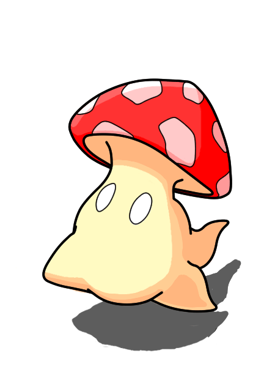
 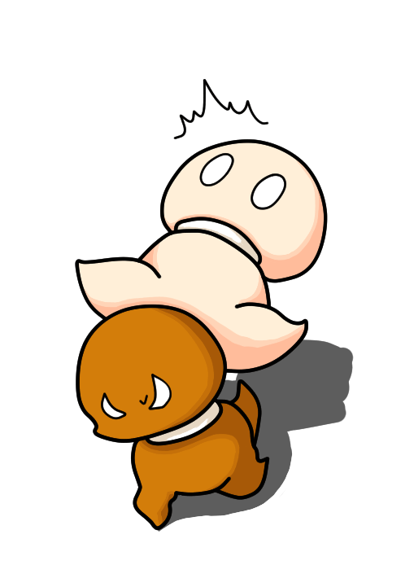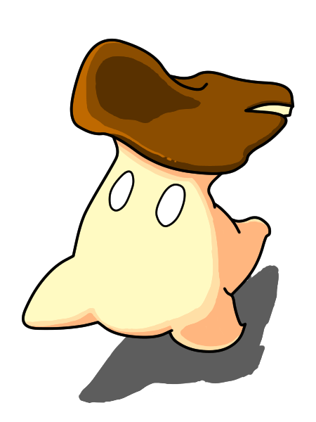
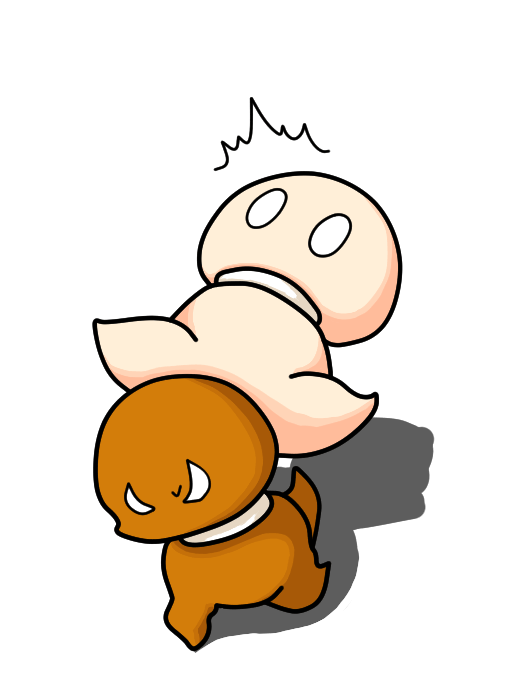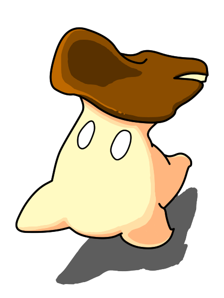 - キノコ恐竜の各キャラクターをうごくイラストで描きました。それぞれのキャラクターの性格や大きさの違いを表現したMain Visualの走り方を踏襲し、別角度からのアニメーションにすることでキャラクターの全体像がつかめるように意識しました。制作中のキャラクターはモノトーンのイラストを代わりに置き、コンセプトを意識した装飾にしています。
-
About イラスト
- 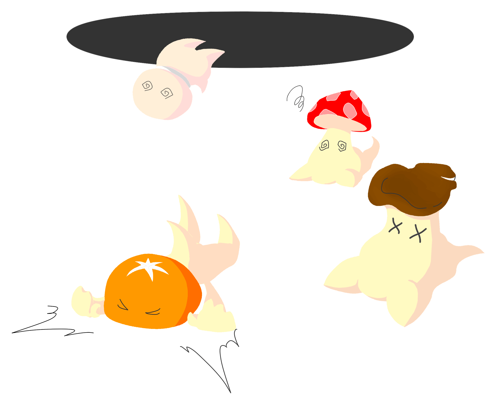
- Aboutページの導入部分に書かれた文章を表現したイラストを描きました。キノコ恐竜たちが人間の世界に来てしまった瞬間を描き、それぞれの表情や体の状態にこだわりました。メインビジュアルと違い、塗りのみのイラストにした理由はよりやさしい印象を与えて、かわいらしさを前面に出したかったからです。
-
01 誕生の不思議 イラスト
- 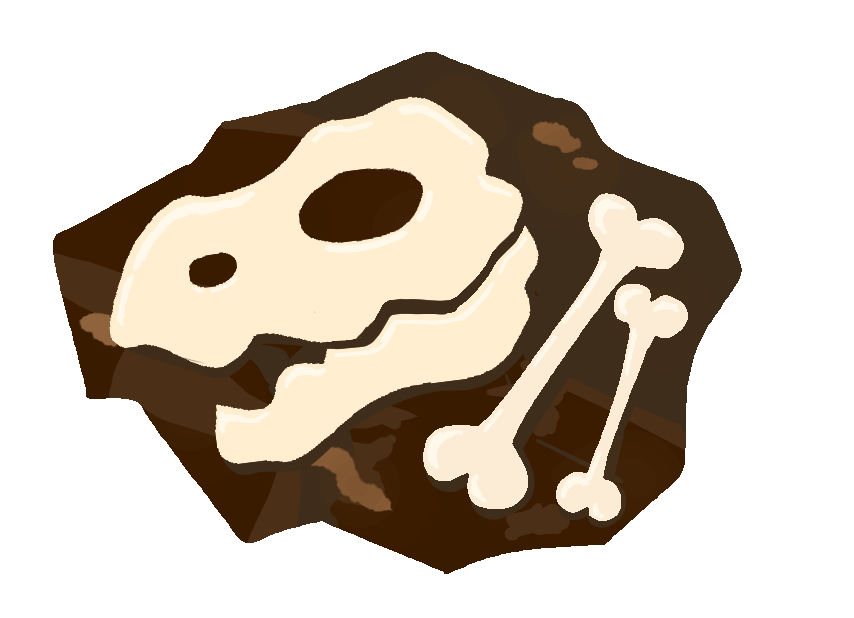
- 3つの不思議のなかの誕生の秘密に関するイラストを描きました。テキストの内容を反映させて、キノコ恐竜たちが暮らしているキノコの森の地下に埋まっている恐竜の骨を描きました。全体のトーンや線の形など、ほかのイラストと雰囲気に合わせることを意識しています。主張はしないしれど、文章を理解する手助けになるイラストを目指しました。
-
02 食べ物の不思議 イラスト
- 同じく3つの不思議から食べ物の不思議のイラストを描きました。人間の世界にきて、森にない食べ物を楽しむキノコ恐竜たちを表現しています。状況を表現するために俯瞰気味の構図にし、真ん中の焚火の明るさで変化する体色を意識しました。文章とあわせて読み手の想像力を刺激する手助けになるものに仕上げています。
-
03 一生の不思議 イラスト
- 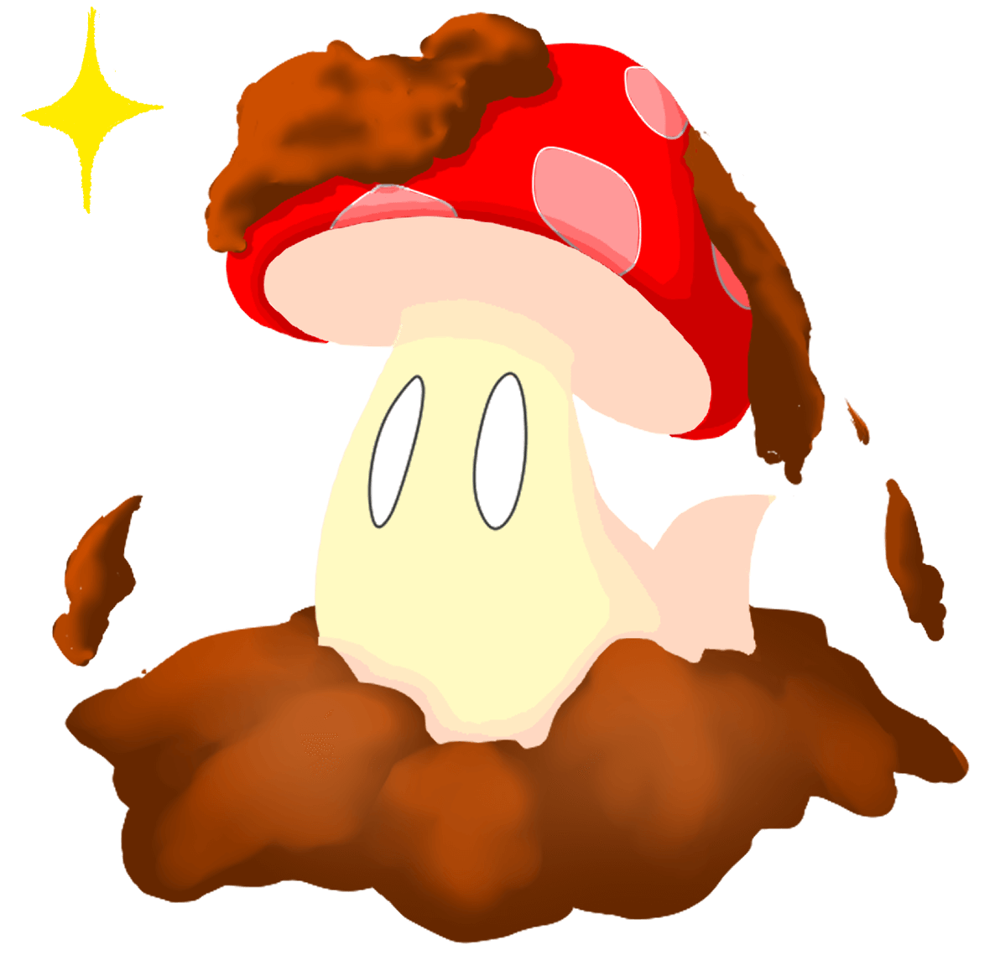
- 3つの不思議の最後である、一生の不思議のイラストになります。キノコ恐竜が食べられたり、枯れてしまったとしてもやられたところから生えてくる状況を描きました。Loading Animationでも扱った部分だったのでうごくイラストにはせず、土色の表現、キャラクターの体色やそのカゲの雰囲気を出すことで違いを出しました。
-
Store イラスト
- 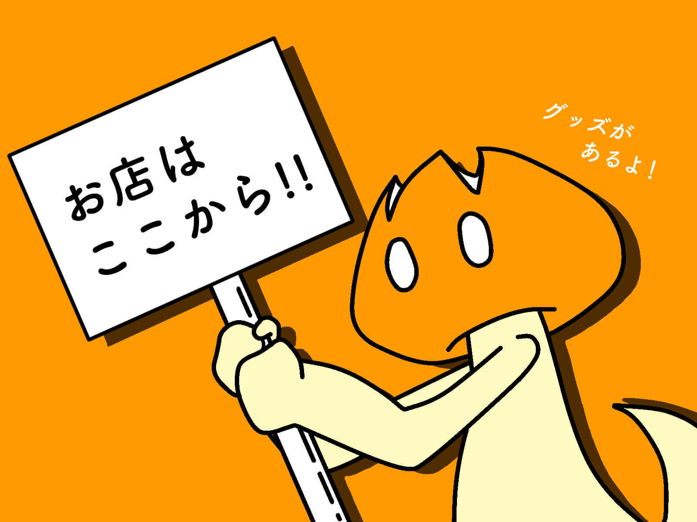
- 外部のグッズ販売サイトへのリンクに使用するイラストを描きました。各ページに設置するものだったので主線をつけた書き方を選び、お店の宣伝をするキノコ恐竜のかわいらしさを出しました。ほかのキャラクターでもラフ案は出しましたが、腕のあるキャラクターのほうが安定したので、そのキャラクターのテーマカラーでまとめて目立つようにしています。
-
Scroll-up イラスト
-
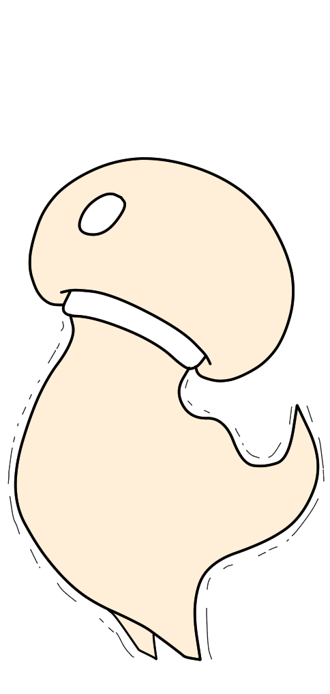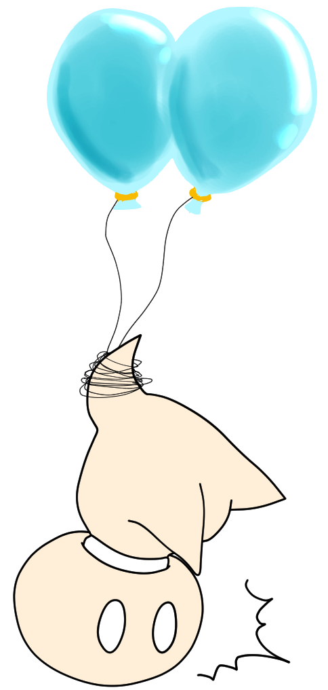
- ScrollボタンとScroll-up状態の2つのイラストを描きました。機能的に画面の端に置かれることと目立ちすぎないことが条件だったので、一番小さいマッシュルームのキノコ恐竜をモデルにしました。思わず押したくなるように、非選択状態では背伸びをしてサイトを眺める様子を描き、押されると驚き、風船に足を取られて浮かんでいくイラストに仕上げました。